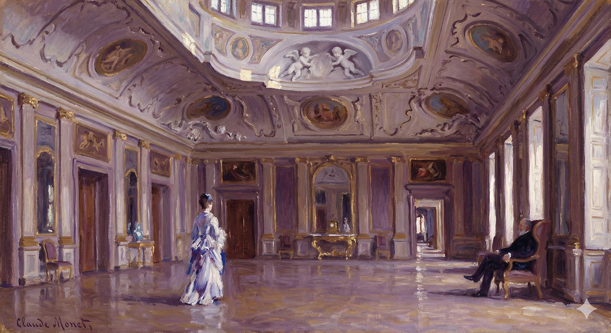

The text provides the heading "SECTION 13 ORIGINAL" and the number "1909".
Based on the provided text, a character study is not possible as there are no characters presented.
The text consists solely of a heading ("SECTION 13 ORIGINAL") and a year ("1909"). This presentation is entirely impersonal, suggesting a focus on archival data or a formal record rather than on individuals.
Consequently, there are no shifts in any character's situation, as no characters or situations are described.
Not yet so much as this morning had she felt herself sink into possession; gratefully glad that the warmth of the Southern summer was still in the high florid rooms, palatial chambers where hard cool pavements took reflexions in their lifelong polish, and where the sun on the stirred sea-water, flickering up through open windows, played over the painted "subjects" in the splendid ceilings—medallions of purple and brown, of brave old melancholy colour, medals as of old reddened gold, embossed and beribboned, all toned with time and all flourished and scolloped and gilded about, set in their great moulded and figured concavity (a nest of white cherubs, friendly creatures of the air) and appreciated by the aid of that second tier of smaller lights, straight openings to the front, which did everything, even with the Baedekers and photographs of Milly's party dreadfully meeting the eye, to make of the place an apartment of state. This at last only, though she had enjoyed the palace for three weeks, seemed to count as effective occupation; perhaps because it was the first time she had been alone—really to call alone—since she had left London, it ministered to her first full and unembarrassed sense of what the great Eugenio had done for her. The great Eugenio, recommended by grand-dukes and Americans, had entered her service during the last hours of all—had crossed from Paris, after multiplied pourparlers with Mrs. Stringham, to whom she had allowed more than ever a free hand, on purpose to escort her to the Continent and encompass her there, and had dedicated to her, from the moment of their meeting, all the treasures of his experience. She had judged him in advance—polyglot and universal, very dear and very deep—as probably but a swindler finished to the finger-tips; for he was forever carrying one well-kept Italian hand to his heart and plunging the other straight into her pocket, which, as she had instantly observed him to recognise, fitted it like a glove. The remarkable thing was that these elements of their common consciousness had rapidly gathered into an indestructible link, formed the ground of a happy relation; being by this time, strangely, grotesquely, delightfully, what most kept up confidence between them and what most expressed it.
She hadn't felt truly settled, truly in possession of the place, until that very morning. She was glad the warmth of the Southern summer still permeated the grand, ornate rooms. These palatial chambers had hard, cool floors that reflected light, reflecting their lifelong polish. Sunlight, reflected off the restless sea and flickering through the open windows, danced across the painted artwork on the ceilings: medallions of purple and brown, old and rich with a melancholy beauty, like tarnished gold medals with ribbons, all softened by age, embellished with flourishes, scallops, and gilding. These were set in their great, molded, and patterned curves—a haven for cheerful white cherubs—and appreciated by the help of that second row of smaller lights, which were open to the front. They did everything, even though Milly's party's guidebooks and photos were distressingly visible, to transform the place into a suite fit for royalty.
This, at last, even though she'd enjoyed the palace for three weeks, seemed to be her actual occupation. Perhaps because it was the first time she’d been truly alone since she left London, it nourished her first full, untroubled understanding of what the great Eugenio had done for her. The great Eugenio, recommended by grand dukes and Americans, had entered her service at the last possible moment. He'd come from Paris after a series of negotiations with Mrs. Stringham, whom she'd given more control than ever, intending to escort her to the Continent and look after her there. From the moment they met, he’d devoted all his experience to her.
She had assumed he was a con artist, perfectly polished and knowledgeable in many languages, but still, a swindler to the core. He was always clutching one perfectly manicured Italian hand to his heart while the other plunged straight into her pocket, which, as she instantly realized, he recognized fit like a glove. The remarkable thing was that these shared truths had quickly become an unbreakable bond, the foundation of a happy relationship. At this point, strangely, comically, and delightfully, these truths were what most sustained their trust and expressed it best.
She had seen quickly enough what was happening—the usual thing again, yet once again. Eugenio had, in an interview of five minutes, understood her, had got hold, like all the world, of the idea not so much of the care with which she must be taken up as of the care with which she must be let down. All the world understood her, all the world had got hold; but for nobody yet, she felt, would the idea have been so close a tie or won from herself so patient a surrender. Gracefully, respectfully, consummately enough—always with hands in position and the look, in his thick neat white hair, smooth fat face and black professional, almost theatrical eyes, as of some famous tenor grown too old to make love, but with an art still to make money—did he on occasion convey to her that she was, of all the clients of his glorious career, the one in whom his interest was most personal and paternal. The others had come in the way of business, but for her his sentiment was special. Confidence rested thus on her completely believing that: there was nothing of which she felt more sure. It passed between them every time they conversed; he was abysmal, but this intimacy lived on the surface. He had taken his place already for her among those who were to see her through, and meditation ranked him, in the constant perspective, for the final function, side by side with poor Susie—whom she was now pitying more than ever for having to be herself so sorry and to say so little about it. Eugenio had the general tact of a residuary legatee—which was a character that could be definitely worn; whereas she could see Susie, in the event of her death, in no character at all, Susie being insistently, exclusively concerned in her mere makeshift duration. This principle, for that matter, Milly at present, with a renewed flare of fancy, felt she should herself have liked to believe in. Eugenio had really done for her more than he probably knew—he didn't after all know everything—in having, for the wind-up of the autumn, on a weak word from her, so admirably, so perfectly established her. Her weak word, as a general hint, had been: "At Venice, please, if possible, no dreadful, no vulgar hotel; but, if it can be at all managed—you know what I mean—some fine old rooms, wholly independent, for a series of months. Plenty of them too, and the more interesting the better: part of a palace, historic and picturesque, but strictly inodorous, where we shall be to ourselves, with a cook, don't you know?—with servants, frescoes, tapestries, antiquities, the thorough make-believe of a settlement."
She'd figured it out quickly—the same old story, happening all over again. In just a five-minute conversation, Eugenio had understood her. Like everyone else, he grasped the idea not of how carefully to support her, but how carefully to let her down. Everyone understood, everyone got it; but for no one else, she felt, would the idea be so emotionally significant or have been met with such patient acceptance on her part.
With grace, respect, and complete professionalism – always with his hands perfectly positioned and that look in his thick, neatly combed white hair, smooth, plump face, and professional, almost theatrical black eyes, like a famous tenor too old to romance but still skilled at making money – he’d occasionally convey to her that, of all the clients he'd had in his illustrious career, she was the one he took the most personal and paternal interest in. The others were just business, but his feelings for her were special. This assurance rested on her complete belief in it: there was nothing she felt more certain of. It passed between them every time they spoke. He was a shallow person, but this intimacy existed on the surface. He’d already taken his place in her mind among those who would see her through, and she saw him, in her consistent perspective, as occupying the final role, side by side with poor Susie – whom she was now feeling more sorry for than ever, because of Susie’s own sorrow and her inability to truly express it. Eugenio possessed the general tact of someone expecting an inheritance – a character that could be readily adopted. Whereas she couldn’t picture Susie, should she die, taking on any particular role at all, Susie being wholly and insistently preoccupied with simply surviving.
This idea, in fact, Milly suddenly felt, with a renewed surge of imagination, she herself would have liked to believe in. Eugenio had genuinely done more for her than he probably realized – he didn’t, after all, know everything – by establishing her so admirably, so perfectly, for the end of the autumn, based on a vague suggestion from her. Her vague suggestion, as a general hint, had been: "In Venice, please, if possible, no dreadful, vulgar hotels; but, if it can be arranged – you know what I mean – some beautiful old rooms, completely independent, for several months. Plenty of them too, and the more interesting the better: part of a palace, historic and picturesque, but completely odorless, where we'll be left to ourselves, with a cook, you know?—with servants, frescoes, tapestries, antiques, the complete pretense of settling down."
The proof of how he better and better understood her was in all the place; as to his masterly acquisition of which she had from the first asked no questions. She had shown him enough what she thought of it, and her forbearance pleased him; with the part of the transaction that mainly concerned her she would soon enough become acquainted, and his connexion with such values as she would then find noted could scarce help growing, as it were, still more residuary. Charming people, conscious Venice-lovers, evidently, had given up their house to her, and had fled to a distance, to other countries, to hide their blushes alike over what they had, however briefly, alienated, and over what they had, however durably, gained. They had preserved and consecrated, and she now—her part of it was shameless—appropriated and enjoyed. Palazzo Leporelli held its history still in its great lap, even like a painted idol, a solemn puppet hung about with decorations. Hung about with pictures and relics, the rich Venetian past, the ineffaceable character, was here the presence revered and served: which brings us back to our truth of a moment ago—the fact that, more than ever, this October morning, awkward novice though she might be, Milly moved slowly to and fro as the priestess of the worship. Certainly it came from the sweet taste of solitude, caught again and cherished for the hour; always a need of her nature, moreover, when things spoke to her with penetration. It was mostly in stillness they spoke to her best; amid voices she lost the sense. Voices had surrounded her for weeks, and she had tried to listen, had cultivated them and had answered back; these had been weeks in which there were other things they might well prevent her from hearing. More than the prospect had at first promised or threatened she had felt herself going on in a crowd and with a multiplied escort; the four ladies pictured by her to Sir Luke Strett as a phalanx comparatively closed and detached had in fact proved a rolling snowball, condemned from day to day to cover more ground. Susan Shepherd had compared this portion of the girl's excursion to the Empress Catherine's famous progress across the steppes of Russia; improvised settlements appeared at each turn of the road, villagers waiting with addresses drawn up in the language of London. Old friends in fine were in ambush, Mrs. Lowder's, Kate Croy's, her own; when the addresses weren't in the language of London they were in the more insistent idioms of American centres. The current was swollen even by Susie's social connexions; so that there were days, at hotels, at Dolomite picnics, on lake steamers, when she could almost repay to Aunt Maud and Kate with interest the debt contracted by the London "success" to which they had opened the door.
His increasing understanding of her was evident everywhere; she had never questioned his mastery of the situation. She had clearly indicated her opinion, and her restraint pleased him. She would soon be informed about the part of this arrangement that primarily concerned her, and his connection to the advantages she would then discover would inevitably grow even more encompassing. Charming, obviously enthusiastic Venice admirers had given her their house and left, going to other countries to avoid the embarrassment of what they had, however briefly, relinquished, and what they had, however permanently, gained. They had preserved and consecrated it, and now she—shamelessly—appropriated and enjoyed it. Palazzo Leporelli still contained its history, just like a painted idol, a solemn puppet adorned with decorations. Embellished with pictures and relics, the rich Venetian past, the indelible character, was the presence revered and served here. This brings us back to what we realized a moment ago: that more than ever, this October morning, though she might be an awkward beginner, Milly moved slowly, like a priestess of worship. It certainly came from the sweet experience of solitude, recaptured and cherished for the time being. Solitude was a constant need for her, especially when things spoke to her profoundly. They spoke best in silence; she lost the meaning amidst voices. Voices had surrounded her for weeks, and she had tried to listen, had cultivated them, and responded; these had been weeks when other things might well have prevented her from truly hearing. She had felt herself moving forward in a crowd and with a large entourage, more than the prospect had initially promised or threatened. The four ladies she had described to Sir Luke Strett as a relatively closed and separate unit had actually become a rolling snowball, destined to expand daily. Susan Shepherd had compared this part of the girl's journey to Empress Catherine’s famous trek across the Russian steppes; makeshift settlements appeared at every turn, villagers waiting with welcoming speeches written in London slang. Old friends were waiting in ambush, Mrs. Lowder, Kate Croy, and her own; when the speeches weren't in London slang, they were in the more persistent idioms of American centers. Susie's social connections had even swelled the flow; so that there were days, at hotels, on Dolomite picnics, on lake steamers, when she could almost repay Aunt Maud and Kate with interest the debt she owed them for opening the door to the London "success."
Mrs. Lowder's success and Kate's, amid the shock of Milly's and Mrs. Stringham's compatriots, failed but little, really, of the concert-pitch; it had gone almost as fast as the boom, over the sea, of the last great native novel. Those ladies were "so different"—different, observably enough, from the ladies so appraising them; it being throughout a case mainly of ladies, of a dozen at once sometimes, in Milly's apartment, pointing, also at once, that moral and many others. Milly's companions were acclaimed not only as perfectly fascinating in themselves, the nicest people yet known to the acclaimers, but as obvious helping hands, socially speaking, for the eccentric young woman, evident initiators and smoothers of her path, possible subduers of her eccentricity. Short intervals, to her own sense, stood now for great differences, and this renewed inhalation of her native air had somehow left her to feel that she already, that she mainly, struck the compatriot as queer and dissociated. She moved such a critic, it would appear, as to rather an odd suspicion, a benevolence induced by a want of complete trust: all of which showed her in the light of a person too plain and too ill-clothed for a thorough good time, and yet too rich and too befriended—an intuitive cunning within her managing this last—for a thorough bad one. The compatriots, in short, by what she made out, approved her friends for their expert wisdom with her; in spite of which judicial sagacity it was the compatriots who recorded themselves as the innocent parties. She saw things in these days that she had never seen before, and she couldn't have said why save on a principle too terrible to name; whereby she saw that neither Lancaster Gate was what New York took it for, nor New York what Lancaster Gate fondly fancied it in coquetting with the plan of a series of American visits. The plan might have been, humorously, on Mrs. Lowder's part, for the improvement of her social position—and it had verily in that direction lights that were perhaps but half a century too prompt; at all of which Kate Croy assisted with the cool controlled facility that went so well, as the others said, with her particular kind of good looks, the kind that led you to expect the person enjoying them would dispose of disputations, speculations, aspirations, in a few very neatly and brightly uttered words, so simplified in sense, however, that they sounded, even when guiltless, like rather aggravated slang. It wasn't that Kate hadn't pretended too that she should like to go to America; it was only that with this young woman Milly had constantly proceeded, and more than ever of late, on the theory of intimate confessions, private frank ironies that made up for their public grimaces and amid which, face to face, they wearily put off the mask.
Mrs. Lowder's and Kate's success, despite the shock felt by Milly and Mrs. Stringham's circle of acquaintances, was almost as significant and impactful as the booming popularity of the latest popular novel. Those women were considered "so different"—distinct, obviously, from the women judging them. This situation mainly involved women, sometimes a dozen at a time, gathered in Milly's apartment, drawing conclusions about her and others. Milly's companions were celebrated not only for being perfectly fascinating and the most delightful people anyone knew, but also for obviously helping the unconventional young woman socially, for guiding and smoothing her path, and for possibly toning down her eccentricities.
To Milly, brief periods of time now felt like major changes. This return to her homeland had left her feeling that she was already considered strange and detached by her fellow Americans. She seemed to provoke a sense of unease, a cautious goodwill born from a lack of complete trust. All of this made her appear as someone too plain and poorly dressed for a truly enjoyable experience, yet also too wealthy and well-connected—with an instinctive cleverness managing this last aspect—to have a truly miserable one. In short, Milly gathered that her compatriots approved of her friends because of their skillful handling of her. Despite this judgment, it was the compatriots who presented themselves as the innocent bystanders.
During this time, Milly saw things she hadn't noticed before, and she couldn't explain why, except with a terrifying principle. She realized that neither Lancaster Gate (a wealthy London neighborhood) was what New York believed it to be, nor New York what Lancaster Gate imagined it to be while flirting with the idea of American visits. The plan, perhaps jokingly, was to improve Mrs. Lowder's social standing – and it might have succeeded, though perhaps half a century too early. Kate Croy assisted with this with cool, controlled ease, which, as others noted, complemented her particular kind of attractiveness, the kind that made you expect she would dismiss arguments, speculations, and ambitions with a few clever, witty words, so simplified in meaning that they sounded, even when harmless, like exaggerated slang.
It wasn't that Kate hadn't pretended she wanted to visit America too; it was only that Milly had consistently operated, especially lately, on the basis of intimate confessions, private ironic jokes that compensated for their public appearances, and face-to-face, they tiredly removed their masks.
These puttings-off of the mask had finally quite become the form taken by their moments together, moments indeed not increasingly frequent and not prolonged, thanks to the consciousness of fatigue on Milly's side whenever, as she herself expressed it, she got out of harness. They flourished their masks, the independent pair, as they might have flourished Spanish fans; they smiled and sighed on removing them; but the gesture, the smiles, the sighs, strangely enough, might have been suspected the greatest reality in the business. Strangely enough, we say, for the volume of effusion in general would have been found by either on measurement to be scarce proportional to the paraphernalia of relief. It was when they called each other's attention to their ceasing to pretend, it was then that what they were keeping back was most in the air. There was a difference, no doubt, and mainly to Kate's advantage: Milly didn't quite see what her friend could keep back, was possessed of, in fine, that would be so subject to retention; whereas it was comparatively plain sailing for Kate that poor Milly had a treasure to hide. This was not the treasure of a shy, an abject affection—concealment, on that head, belonging to quite another phase of such states; it was much rather a principle of pride relatively bold and hard, a principle that played up like a fine steel spring at the lightest pressure of too near a footfall. Thus insuperably guarded was the truth about the girl's own conception of her validity; thus was a wondering pitying sister condemned wistfully to look at her from the far side of the moat she had dug round her tower. Certain aspects of the connexion of these young women show for us, such is the twilight that gathers about them, in the likeness of some dim scene in a Maeterlinck play; we have positively the image, in the delicate dusk, of the figures so associated and yet so opposed, so mutually watchful: that of the angular pale princess, ostrich-plumed, black-robed, hung about with amulets, reminders, relics, mainly seated, mainly still, and that of the upright restless slow-circling lady of her court who exchanges with her, across the black water streaked with evening gleams, fitful questions and answers. The upright lady, with thick dark braids down her back, drawing over the grass a more embroidered train, makes the whole circuit, and makes it again, and the broken talk, brief and sparingly allusive, seems more to cover than to free their sense. This is because, when it fairly comes to not having others to consider, they meet in an air that appears rather anxiously to wait for their words. Such an impression as that was in fact grave, and might be tragic; so that, plainly enough, systematically at last, they settled to a care of what they said.
Removing their masks had become the normal way they interacted. These moments together were not happening as often or lasting as long, since Milly felt tired whenever she stopped pretending. They played with their masks, these two independent women, like they were using Spanish fans. They smiled and sighed as they took them off, but strangely, the gestures, smiles, and sighs seemed to be the most genuine thing about their relationship. Surprisingly, the emotional outpouring seemed small compared to the relief they showed. When they acknowledged they were no longer pretending, that's when what they were hiding was most obvious. There was a difference between them, mainly in Kate's favor. Milly didn't understand what her friend could be holding back, whereas it was obvious to Kate that Milly had something to hide. It wasn't the kind of secret born of shy or desperate love; that was a different situation. Instead, it was a strong, unyielding sense of pride that sprang into action at the slightest hint of a threat. That's how well-guarded the truth was about Milly's view of herself. Therefore, Kate, who felt pity, was forced to watch her from a distance. The relationship between these two young women is like a scene from a play by Maeterlinck, shrouded in a dim atmosphere. We see a pale, thin princess, wearing an ostrich-plumed hat and black robes, covered in charms and relics, mostly sitting still. Across from her, there’s the active, restless woman of her court, who circles slowly and exchanges occasional questions and answers with her. The upright lady, with thick dark braids, her embroidered train dragging on the grass, walks the whole circle, then repeats it. Their conversation, brief and allusive, seems to hide more than it reveals. This is because, when they're alone, the air seems to hold its breath, waiting anxiously for their words. This feeling was serious and could be considered tragic, so they carefully chose their words.
There could be no gross phrasing to Milly, in particular, of the probability that if she wasn't so proud she might be pitied with more comfort—more to the person pitying; there could be no spoken proof, no sharper demonstration than the consistently considerate attitude, that this marvellous mixture of her weakness and of her strength, her peril, if such it were, and her option, made her, kept her, irresistibly interesting. Kate's predicament in the matter was, after all, very much Mrs. Stringham's own, and Susan Shepherd herself indeed, in our Maeterlinck picture, might well have hovered in the gloaming by the moat. It may be declared for Kate, at all events, that her sincerity about her friend, through this time, was deep, her compassionate imagination strong; and that these things gave her a virtue, a good conscience, a credibility for herself, so to speak, that were later to be precious to her. She grasped with her keen intelligence the logic of their common duplicity, went unassisted through the same ordeal as Milly's other hushed follower, easily saw that for the girl to be explicit was to betray divinations, gratitudes, glimpses of the felt contrast between her fortune and her fear—all of which would have contradicted her systematic bravado. That was it, Kate wonderingly saw: to recognise was to bring down the avalanche—the avalanche Milly lived so in watch for and that might be started by the lightest of breaths; though less possibly the breath of her own stifled plaint than that of the vain sympathy, the mere helpless gaping inference of others. With so many suppressions as these, therefore, between them, their withdrawal together to unmask had to fall back, as we have hinted, on a nominal motive—which was decently represented by a joy at the drop of chatter. Chatter had in truth all along attended their steps, but they took the despairing view of it on purpose to have ready, when face to face, some view or other of something. The relief of getting out of harness—that was the moral of their meetings; but the moral of this, in turn, was that they couldn't so much as ask each other why harness need be worn. Milly wore it as a general armour.
Milly would never have understood the blatant suggestion that if she wasn't so proud, people might feel more comfortable pitying her—more satisfying to the person feeling the pity. There was no clearer sign, no sharper demonstration, than the consistently kind behavior that this incredible mix of her vulnerability and her strength, her potential danger and her choices, made her, kept her, captivating. Kate's situation mirrored Mrs. Stringham's, and even Susan Shepherd herself could have been in the scene, lingering in the shadows near the water. We can say with certainty that Kate's feelings for her friend during this time were genuine and that her compassionate imagination was strong. These qualities gave her a sense of virtue, a clear conscience, a belief in herself that would later be very important to her. She understood, with her sharp mind, the logic of their shared deception. She navigated the same challenges as Milly’s other quiet supporter. She easily saw that if Milly had been open, it would have revealed her intuitions, her gratitude, her understanding of the contrast between her good luck and her fear, all of which would have contradicted her carefully constructed façade. That was the core of it, Kate realized with wonder: to acknowledge the truth would unleash the disaster—the disaster Milly was constantly watching out for and that could be triggered by the smallest thing. It was less likely to be triggered by her own suppressed complaints than by the useless sympathy, the helpless speculation of others. So, with all these secrets between them, their plan to be honest together had to fall back, as we've already suggested, on a superficial reason, which was presented as joy at ending the conversations. There had always been chatter, but they chose to view it negatively so they would have something to discuss when they met. The freedom of escaping the pressures of life—that was the meaning of their meetings. But the meaning of *this* was that they couldn't even ask each other why those pressures were necessary. Milly used them as a protective shield.
She was out of it at present, for some reason, as she hadn't been for weeks; she was always out of it, that is, when alone, and her companions had never yet so much as just now affected her as dispersed and suppressed. It was as if still again, still more tacitly and wonderfully, Eugenio had understood her, taking it from her without a word and just bravely and brilliantly in the name, for instance, of the beautiful day: "Yes, get me an hour alone; take them off—I don't care where; absorb, amuse, detain them; drown them, kill them if you will: so that I may just a little, all by myself, see where I am." She was conscious of the dire impatience of it, for she gave up Susie as well as the others to him—Susie who would have drowned her very self for her; gave her up to a mercenary monster through whom she thus purchased respites. Strange were the turns of life and the moods of weakness; strange the flickers of fancy and the cheats of hope; yet lawful, all the same—weren't they?—those experiments tried with the truth that consisted, at the worst, but in practising on one's self. She was now playing with the thought that Eugenio might inclusively assist her: he had brought home to her, and always by remarks that were really quite soundless, the conception, hitherto ungrasped, of some complete use of her wealth itself, some use of it as a counter-move to fate. It had passed between them as preposterous that with so much money she should just stupidly and awkwardly want—any more want a life, a career, a consciousness, than want a house, a carriage or a cook. It was as if she had had from him a kind of expert professional measure of what he was in a position, at a stretch, to undertake for her; the thoroughness of which, for that matter, she could closely compare with a looseness on Sir Luke Strett's part that—at least in Palazzo Leporelli when mornings were fine—showed as almost amateurish. Sir Luke hadn't said to her "Pay enough money and leave the rest to me"—which was distinctly what Eugenio did say. Sir Luke had appeared indeed to speak of purchase and payment, but in reference to a different sort of cash. Those were amounts not to be named nor reckoned, and such moreover as she wasn't sure of having at her command. Eugenio—this was the difference—could name, could reckon, and prices of his kind were things she had never suffered to scare her. She had been willing, goodness knew, to pay enough for anything, for everything, and here was simply a new view of the sufficient quantity. She amused herself—for it came to that, since Eugenio was there to sign the receipt—with possibilities of meeting the bill. She was more prepared than ever to pay enough, and quite as much as ever to pay too much. What else—if such were points at which your most trusted servant failed—was the use of being, as the dear Susies of earth called you, a princess in a palace?
She was out of it, spacing out, for some reason, something that hadn't happened in weeks. She was usually like that when she was alone, but her companions had never seemed so distant and insignificant as they did right now. It was as if, again, and even more silently and wonderfully, Eugenio understood her. He seemed to know what she needed without her saying a word, and with a kind of confident assurance, perhaps for the sake of the beautiful day. "Yes, give me an hour alone; take them away—I don't care where; occupy them, entertain them, keep them busy; lose them, get rid of them if you have to: just so I can have a little time to myself, to figure out where I am." She was aware of her desperate need for this, so she was even willing to let go of Susie, who would do anything for her. She was willing to put Susie in the hands of this person, Eugenio, just to buy herself some relief. Life was unpredictable, and moods of weakness were strange. Flights of fancy and the tricks of hope were also strange, yet permissible, weren't they? These experiments with the truth were, at worst, only experimenting with herself. She was now toying with the idea that Eugenio could help her completely. He had impressed upon her, always with a kind of silent suggestion, the concept that she hadn't grasped before: some complete use of her wealth itself, using it as a way to counter fate. It was a shared, absurd idea that with so much money she shouldn't just foolishly and awkwardly want—want a life, a career, a sense of self—any more than she'd want a house, a car, or a cook. It was as if she'd gotten from him a kind of professional assessment of what he was capable of doing for her. His thoroughness was something she could compare to the lack of it on Sir Luke Strett's part, which seemed almost amateurish, especially when the mornings were beautiful at Palazzo Leporelli. Sir Luke hadn't said to her, "Pay enough money and leave the rest to me"—which was exactly what Eugenio had said. Sir Luke had indeed spoken about purchase and payment, but it was regarding a different kind of currency, amounts not to be mentioned or calculated, and moreover, amounts she wasn't sure she had. Eugenio—that was the difference—could name, could calculate, and those kinds of prices were things that never scared her. She had been, goodness knows, willing to pay enough for anything, for everything, and this was simply a new perspective on what "enough" was. She entertained herself—because that's what it came down to, since Eugenio was there to sign the receipt—with possibilities of how she'd cover the bill. She was more ready than ever to pay enough, and just as much as ever to pay too much. If your most trusted companion failed you in these ways, what was the point of being, as the dear Susies of the world called her, a princess in a palace?
She made now, alone, the full circuit of the place, noble and peaceful while the summer sea, stirring here and there a curtain or an outer blind, breathed into its veiled spaces. She had a vision of clinging to it; that perhaps Eugenio could manage. She was in it, as in the ark of her deluge, and filled with such a tenderness for it that why shouldn't this, in common mercy, be warrant enough? She would never, never leave it—she would engage to that; would ask nothing more than to sit tight in it and float on and on. The beauty and intensity, the real momentary relief of this conceit, reached their climax in the positive purpose to put the question to Eugenio on his return as she had not yet put it; though the design, it must be added, dropped a little when, coming back to the great saloon from which she had started on her pensive progress, she found Lord Mark, of whose arrival in Venice she had been unaware, and who had now—while a servant was following her through empty rooms—been asked, in her absence, to wait. He had waited then, Lord Mark, he was waiting—oh unmistakeably; never before had he so much struck her as the man to do that on occasion with patience, to do it indeed almost as with gratitude for the chance, though at the same time with a sort of notifying firmness. The odd thing, as she was afterwards to recall, was that her wonder for what had brought him was not immediate, but had come at the end of five minutes; and also, quite incoherently, that she felt almost as glad to see him, and almost as forgiving of his interruption of her solitude, as if he had already been in her thought or acting at her suggestion. He was some-how, at the best, the end of a respite; one might like him very much and yet feel that his presence tempered precious solitude more than any other known to one: in spite of all of which, as he was neither dear Susie, nor dear Kate, nor dear Aunt Maud, nor even, for the least, dear Eugenio in person, the sight of him did no damage to her sense of the dispersal of her friends. She hadn't been so thoroughly alone with him since those moments of his showing her the great portrait at Matcham, the moments that had exactly made the high-water-mark of her security, the moments during which her tears themselves, those she had been ashamed of, were the sign of her consciously rounding her protective promontory, quitting the blue gulf of comparative ignorance and reaching her view of the troubled sea. His presence now referred itself to his presence then, reminding her how kind he had been, altogether, at Matcham, and telling her, unexpectedly, at a time when she could particularly feel it, that, for such kindness and for the beauty of what they remembered together, she hadn't lost him—quite the contrary. To receive him handsomely, to receive him there, to see him interested and charmed, as well, clearly, as delighted to have found her without some other person to spoil it—these things were so pleasant for the first minutes that they might have represented on her part some happy foreknowledge. She gave an account of her companions while he on his side failed to press her about them, even though describing his appearance, so unheralded, as the result of an impulse obeyed on the spot. He had been shivering at Carlsbad, belated there and blue, when taken by it; so that, knowing where they all were, he had simply caught the first train. He explained how he had known where they were; he had heard—what more natural?—from their friends, Milly's and his. He mentioned this betimes, but it was with his mention, singularly, that the girl became conscious of her inner question about his reason. She noticed his plural, which added to Mrs. Lowder or added to Kate; but she presently noticed also that it didn't affect her as explaining. Aunt Maud had written to him, Kate apparently—and this was interesting—had written to him; but their design presumably hadn't been that he should come and sit there as if rather relieved, so far as they were concerned, at postponements. He only said "Oh!" and again "Oh!" when she sketched their probable morning for him, under Eugenio's care and Mrs. Stringham's—sounding it quite as if any suggestion that he should overtake them at the Rialto or the Bridge of Sighs would leave him temporarily cold. This precisely it was that, after a little, operated for Milly as an obscure but still fairly direct check to confidence. He had known where they all were from the others, but it was not for the others that, in his actual dispositions, he had come. That, strange to say, was a pity; for, stranger still to say, she could have shown him more confidence if he himself had had less intention. His intention so chilled her, from the moment she found herself divining it, that, just for the pleasure of going on with him fairly, just for the pleasure of their remembrance together of Matcham and the Bronzino, the climax of her fortune, she could have fallen to pleading with him and to reasoning, to undeceiving him in time. There had been, for ten minutes, with the directness of her welcome to him and the way this clearly pleased him, something of the grace of amends made, even though he couldn't know it—amends for her not having been originally sure, for instance at that first dinner of Aunt Maud's, that he was adequately human. That first dinner of Aunt Maud's added itself to the hour at Matcham, added itself to other things, to consolidate, for her present benevolence, the ease of their relation, making it suddenly delightful that he had thus turned up. He exclaimed, as he looked about, on the charm of the place: "What a temple to taste and an expression of the pride of life, yet, with all that, what a jolly home!"—so that, for his entertainment, she could offer to walk him about though she mentioned that she had just been, for her own purposes, in a general prowl, taking everything in more susceptibly than before. He embraced her offer without a scruple and seemed to rejoice that he was to find her susceptible.
She walked all around the place, alone now, taking it all in. The place was elegant and peaceful, while the summer sea, occasionally stirring a curtain or blind, seemed to breathe within the enclosed spaces. She imagined clinging to it, believing perhaps that Eugenio could manage everything. She felt protected within it, like being in an ark after a flood, and felt so tender towards it that surely, in common kindness, it would be enough. She would never leave—she was sure of that; she wouldn’t ask for anything more than to stay there and keep afloat.
The beauty and intensity of this thought, the real momentary relief it provided, reached its peak in her firm resolve to ask Eugenio about it upon his return. However, this plan faded slightly when she returned to the large living room where she’d started her contemplative walk and found Lord Mark there. She hadn't known he'd arrived in Venice, and now, while a servant was leading her through the empty rooms, he had been asked to wait for her.
He had waited, Lord Mark had, and he was waiting—without a doubt. Never before had he seemed so capable of waiting patiently on an occasion, almost as if he was grateful for the chance, yet with a certain air of determined resolve. The strange thing, she would later recall, was that she hadn't immediately wondered why he was there; the thought came to her only after five minutes. Also, and quite unexpectedly, she felt almost as happy to see him and almost as forgiving of his interruption of her solitude as if he'd already been on her mind or acting on her suggestion.
He was, at best, the end of a period of respite. One might like him very much and still feel that his presence spoiled precious solitude more than anyone else's. Despite all of this, because he wasn't dear Susie, or dear Kate, or dear Aunt Maud, or even, in the slightest, dear Eugenio in person, his arrival didn’t diminish her feeling of having been abandoned by her friends. She hadn’t been so completely alone with him since those moments when he'd shown her the great portrait at Matcham. Those moments had been the high point of her security, the moments when even her tears, which she had been ashamed of, had been the sign that she was safely rounding her protective barrier, leaving behind the blue, vague ignorance and reaching her view of the troubled sea.
His presence now reminded her of his presence then, reminding her of how kind he had been, and unexpectedly telling her, at a time when she could particularly feel it, that, because of that kindness and because of the beauty of their shared memories, she hadn't lost him. Quite the opposite. Welcoming him warmly, seeing him interested and charmed and clearly delighted to have found her without anyone else to spoil things—these things were so pleasant at first that they could have represented some happy premonition on her part.
She described what her companions were doing, while he, for his part, didn’t press her for details about them, even though he said his appearance had been the result of an impulse he acted on right away. He’d been shivering in Carlsbad, late and feeling blue, when he’d decided to come. He explained how he had known where they were. He’d heard—what else?—from their friends, Milly’s and his. He mentioned this early on, but it was with this mention that she became aware of her inner question about his reason for being there. She noticed his use of the plural, which included Mrs. Lowder and Kate. But she also noticed that it didn’t give her an answer.
Aunt Maud had written to him, and Kate apparently had written to him, too. But their plan presumably hadn't been that he should come and sit there as if he were rather relieved about their absence. He only said, "Oh!" and then again, "Oh!" when she described their probable morning with Eugenio and Mrs. Stringham, as if any suggestion that he should join them at the Rialto or the Bridge of Sighs would leave him temporarily cold. That was precisely what, after a moment, made her begin to doubt his motives, although it was not obvious.
He had known where they were from the others, but it wasn’t for the others that he had come. That, strangely, was a pity, for she could have felt more confident if he had been less determined. His intention chilled her from the moment she began to guess at it. For the pleasure of continuing their conversation, for the pleasure of their shared memories of Matcham and the Bronzino portrait—the highlight of her good fortune—she could have pleaded with him and reasoned with him, in order to undeceive him in time.
For ten minutes, her warm welcome to him and how pleased he seemed, suggested she was making amends, even though he couldn't know it—amends for not having originally been sure, for instance, at that first dinner of Aunt Maud’s, whether he was truly a good person. That first dinner of Aunt Maud's added itself to the hours at Matcham, and to other things, to reinforce the ease of their relationship, making it suddenly delightful that he had arrived. He exclaimed, as he looked around, on the charm of the place: "What a temple to taste and an expression of the pride of life, and yet, what a lovely home!"
So, for his entertainment, she offered to show him around, though she mentioned that she had just taken her own walk, absorbing everything more deeply than before. He accepted her offer without hesitation and seemed to rejoice that she was receptive.